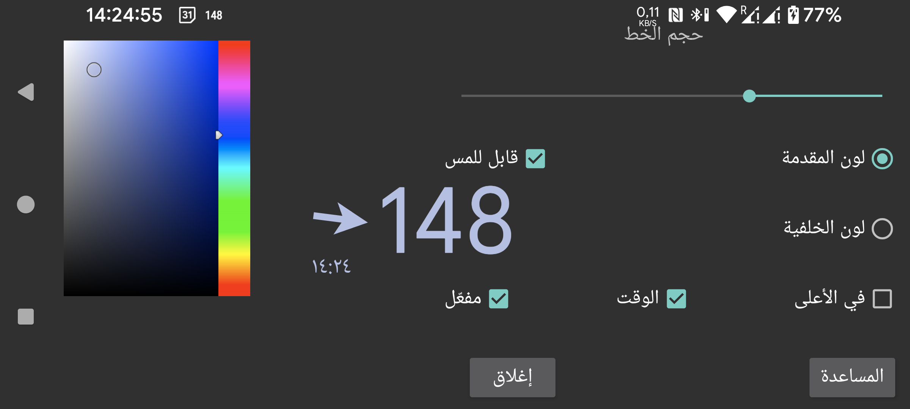

هنا يمكنك ضبط حجم الخط ولوني المقدمة والخلفية للغلوكوز العائم.
قابل للمس : عند تفعيله يمكنك تحريك الغلوكوز العائم بإصبعك وتصغيره بالضغط المطوّل عليه من دون تحريك. وعند إلغاء هذا الخيار تذهب اللمسات إلى النافذة الموجودة أسفل الغلوكوز العائم، بحيث يمكنك استخدام التطبيق الموجود تحته. ويمكنك أيضاً جعل الغلوكوز العائم غير قابل للمس بالنقر المزدوج عليه.
شفاف : يجعل الخلفية غير مرئية.
Above : يظهر الغلوكوز العائم أيضاً فوق Juggluco.
الوقت : الطابع الزمني لقيمة الغلوكوز.
نشط : لتشغيله.
يمكنك تشغيل الغلوكوز العائم وإيقافه من القائمة الوسطى اليسرى ← Float.
يمكنك الانتقال إلى Juggluco بالنقر على جانب السهم من الغلوكوز العائم. يؤدي النقر المزدوج على جانب قيمة الغلوكوز إلى جعل الغلوكوز العائم غير قابل للمس. ويؤدي الضغط المطوّل على جانب قيمة الغلوكوز إلى عرض قيمة صغيرة فقط حتى تتمكن من التفاعل مع ما تحته، ويعيد النقر على العرض الصغير تكبيره. أما السحب أثناء لمس جانب قيمة الغلوكوز فيحرّك الغلوكوز العائم.
لكي يُعرض فوق التطبيقات الأخرى، يحتاج Juggluco إلى إذن خاص. في WearOS وكذلك Android Automotive تحتاج إلى استخدام adb لمنح هذا الإذن:
adb shell pm grant tk.glucodata android.permission.SYSTEM_ALERT_WINDOW
في بعض الساعات (مثل TicWatch Pro) يمكنك أيضاً السماح بذلك من خلال: إعدادات Android/WearOS → التطبيقات والإشعارات → معلومات التطبيق → Juggluco → متقدم → العرض فوق التطبيقات الأخرى.